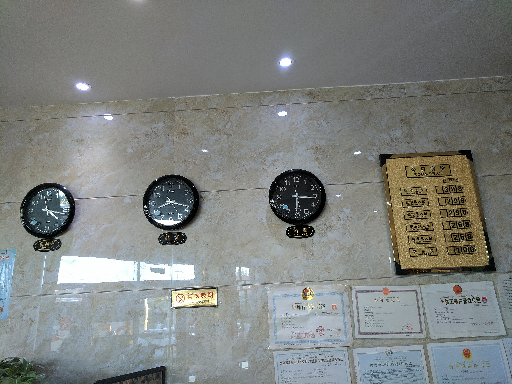
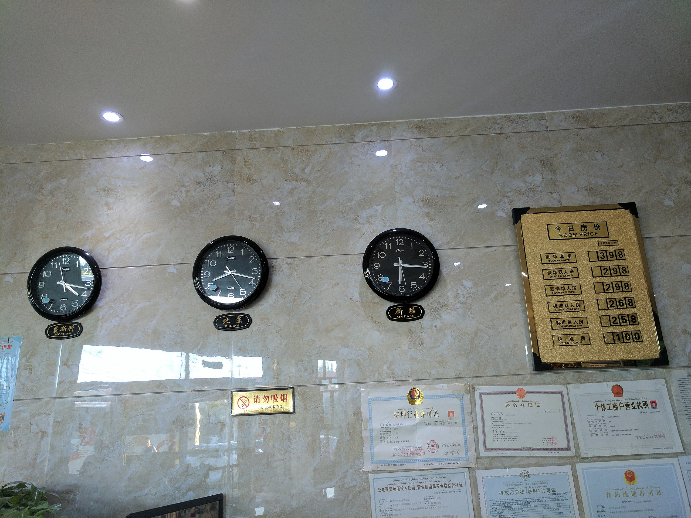
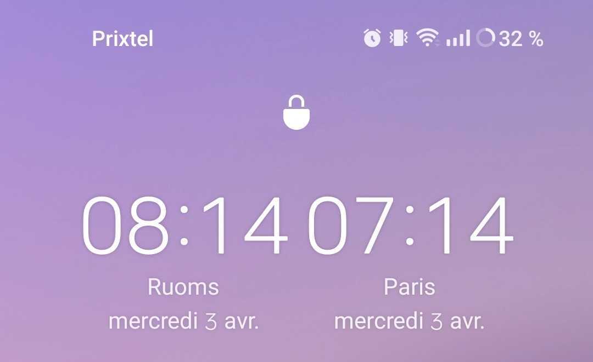

TOUT CE
QUE VOUS N'AVEZ JAMAIS
VOULU SAVOIR
SUR LES FUSEAUX
HORAIRES
Malentendant ?
Transcript ici :
Transcript ici :
TOUT CE
QUE VOUS N'AVEZ JAMAIS
VOULU SAVOIR
SUR LES FUSEAUX
HORAIRES
Qu'est-ce qu'une date exactement ?
Un moyen de se repérer
dans le temps
- une année
- un mois
- un jour
- une heure
- une minute
- une seconde
- un fuseau horaire !
- un calendrier !!
Le temps


Plusieurs façon de représenter
un même "point temporel"
-
21 janvier 2025 à 14h30 à Paris
-
21 janvier 2025 à 20h30 à Singapour

-
22 janvier 2025 à 00h30 en Nouvelle-Zélande
-
21 Tevet 5785 à 14h30 (Paris, cal. Hébraïque)
FIN
merci
Pourquoi
les fuseaux horaires
c'est compliqué ?
Il est midi ! Ou pas ? 🤔
- Lyon : 🍕
- Tahiti : 😴🛏️
- Paris : 🍻
L'heure locale


 

Heure de Pékin
⬇️ Heure du Xinjiang
⬇️
⬇️ Heure du Xinjiang
⬇️
Les fuseaux horaires étranges


24 fuseaux horaires ?
Non : 37
Tout est politique
(ou économique) !
Cocorico !


UTC ou UTC+1 ?


Les Samoa

C'est le bordel…

DST
Daylight Saving Time
(l'heure d'été)
France
- 1916 : heure d'été instaurée
- 1945 : puis abandonnée
- 1976 : rétablie "temporairement"
- 1996 : harmonisée avec l'UE
- DOM / COM : pas d'heure d'été
- …sauf à Saint-Pierre-et-Miquelon qui change d'heure en même temps que… les États-Unis !
Union Européenne
Vers la fin du changement d'heure ?
États-Unis
Partout pareil… dans 48 des 50 états
👑 Australie 👑


Eté
Hiver
Des changements politiques tous les ans !
- 2022-11-27 DST cancelation in Greenland
- 2022-10-28 Changes in Mexico time zones
- 2022-10-27 Fiji stays on standard time
- 2022-10-05 Permanent daylight saving time in Jordan
- 2022-10-05 Permanent daylight saving time in Syria
- 2022-09-06 Palestine summer time will end one day later than expected
- 2022-08-10 Chile postpones DST one week
- 2022-05-12 Iran cancels daylight saving time
- 2022-03-14 Palestine summer time will start one day later than expected
(Entre 5 et 10 changements chaque année !)
🔗 https://time.is/time_zone_newsEn informatique
Documentation du language Ruby
`DateTime` ne gère ni les secondes intercalaire, ni n'assure le suivi d'aucune règle de changement d'heure d'été.
[…]
Si vous voulez aussi gérer les fuseaux horaires, alors bon courage […]
23 avril
Journée mondiale du livre et du droit d'auteur
☠️ 23 avril 1616
☠️ 22 avril 1616
☠️ 23 avril 1616
☠️ 3 mai 1616
C'est compliqué pour tout le monde

XXX à commenté dans 18 minutes
Github
C'est compliqué pour tout le monde

Téléphone One Plus (Android)
© S. Grégeois
Import de donnée de l'un de nos concurrents
Date : 26/02/24 26:02La vie, l'univers et le reste
La vie, l'univers et le reste
Un dernier pour la route ?
L'Antarctique

Alors, quelle heure est-il ?
Exemple
📧 ? 📱 ?
📧📧📧📧📧📧📧📧📧📧
La (vraie) fin